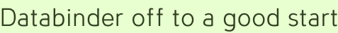

Databinder off to a good start
Happily, Databinder survived its announcement to the Wicket users’ list with no negative response at all. Proclaiming the project’s ambivalence to conventional Java wisdom must have succeeded in deterring unhelpful tier chiding.
I did get a good tip from Timothy B.: a servlet container that tries to serialize the session for clustering will complain that DataApplication isn’t serializable. Several classes will probably need to be marked as such; I’ll get to work on having Jetty serialize the session to ferret them out.
I’ll also be working on a simpler example, which will surely inspire some library additions. I’d rather it not involve names and phone numbers, since people understandably don’t want to give those away and the live demo ends up looking rather silly.
Perhaps it will be bookmarks manager, with create and delete only. I don’t want to imply that edit is hard—since it isn’t—but every line of code counts with this stuff.
And of course there’s Wicket 1.2 to think about, but I’ll probably do at least Databinder 0.2 before integrating that. If the betas look good (and appear on the maven repo), we could see a few Databinder point releases pointing to them. Then, with a nice round number like 0.5 pointing to Wicket 1.2 final, it just might be time to announce this project to a wider audience.
Add a comment